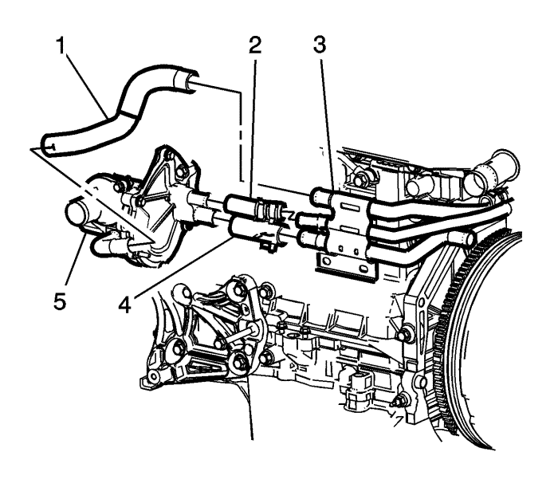
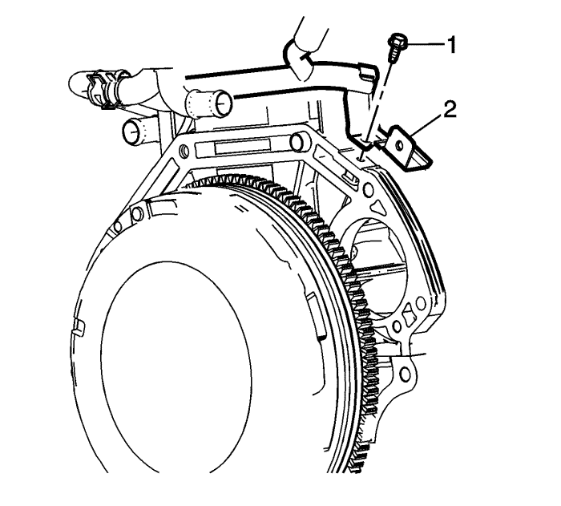
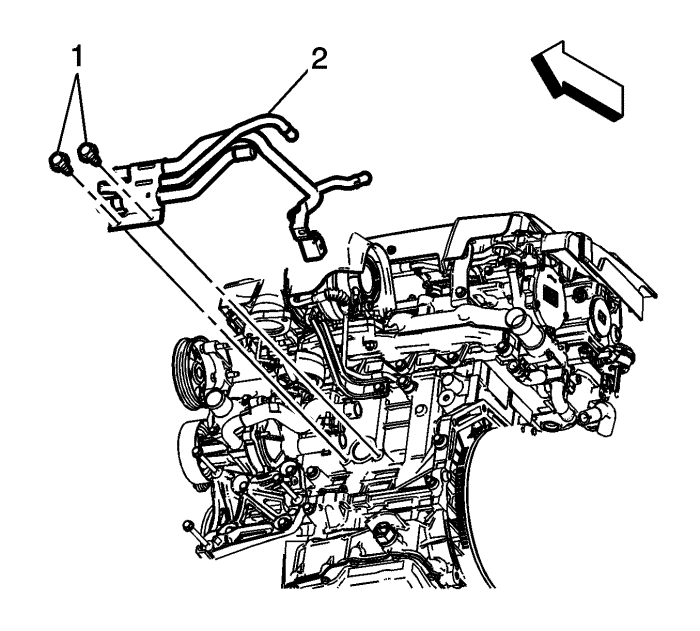

Sustitución de la tuberías de derivación del termostato — LNQ
Herramientas especiales
Tenazas para abrazadera de tubos flexibles BO 38185
Si desea informarse sobre herramientas equivalentes, consulte Herramientas especiales .
Procedimiento de desmontaje
- Vacíe el sistema de refrigeración. Consultar Drenaje y llenado del sistema de refrigeración .
- Desmonte el filtro de partículas Diesel. Consultar Sustitución del filtro de partículas del escape : LNQ .
- Desmonte el adaptador de salida del agua del motor. Consultar Sustitución del adaptador de la salida de agua del motor : LNQ .

- Desconecte los siguientes componentes de la bomba de agua (5) y el tubo de entrada del termostato (2).
| • | Tubo flexible de entrada de la bomba de agua (1) |
| • | Tubo flexible de derivación del termostato (3) |
| • | Tubo flexible de entrada de refrigerante del motor (4) |
- Desconecte el tubo flexible de salida del calefactor. Consultar Sustitución del tubo flexible de salida del calefactor : Diesel → V6 → LE5 .
- Desmonte el tubo flexible de retorno de refrigeración del colector de EGR . Consultar Sustitución del tubo/tubo flexible de refrigeración de la recirculación de gases de escape : Tubo LNQ-EGR → Colector del retorno de refrigerante LNQ-EGR → LNQ-Radiador de aceite al refrigerador → LNQ-EGR de la válvula al refrigerador .
- Desmonte el tubo flexible de salida del refrigerador de aceite del motor. Consultar Sustitución del tubo flexible de salida del refrigerador de aceite del motor : LNQ .

- Extraiga el tornillo del soporte de sujeción del tubo de entrada del termostato (1).

- Extraiga los tornillos de sujeción del tubo de derivación del termostato (1).
- Extraiga con cuidado el tubo de derivación del termostato (2) del compartimento del motor.
Procedimiento de montaje
Precaución: Consulte Precaución con las fijaciones en la sección Prólogo
- Monte el tubo de derivación del termostato en el bloque motor y apriete los tornillos (1) a 25 N·m (18 lib. pie).
- Monte el soporte del tubo de derivación del termostato (2) en el bloque motor y apriete el tornillo (1) a 25 N·m (18 lib. pie).
- Monte el tubo flexible de salida del refrigerador de aceite del motor. Consultar Sustitución del tubo flexible de salida del refrigerador de aceite del motor : LNQ .
- Monte el tubo flexible de retorno de refrigeración del colector de EGR . Consultar Sustitución del tubo/tubo flexible de refrigeración de la recirculación de gases de escape : Tubo LNQ-EGR → Colector del retorno de refrigerante LNQ-EGR → LNQ-Radiador de aceite al refrigerador → LNQ-EGR de la válvula al refrigerador .
- Monte el adaptador de salida del agua del motor. Consultar Sustitución del adaptador de la salida de agua del motor : LNQ .
- Conecte el tubo flexible de salida del calefactor. Consultar Sustitución del tubo flexible de salida del calefactor : Diesel → V6 → LE5 .
- Conecte los siguientes componentes a la bomba de agua (5) y el tubo de derivación del termostato.
| • | Tubo flexible de entrada de refrigerante del motor (4) |
| • | Tubo flexible de derivación del termostato (3) |
| • | Tubo flexible de entrada de la bomba de agua (1) |
- Monte el filtro de partículas diesel. Consultar Sustitución del filtro de partículas del escape : LNQ .
- Llene el sistema de refrigeración. Consultar Drenaje y llenado del sistema de refrigeración .
| © Copyright Chevrolet Europe. All rights reserved |